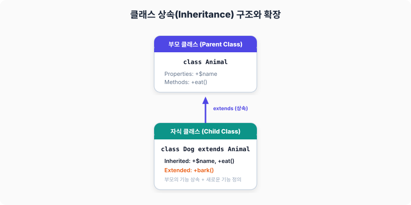

클래스 확장
기본적인 클래스에 대해서 살펴봤습니다. 클래스는 변수(프로퍼티)와 함수(메서드)를 묽어서 객체화 하여 사용을 했습니다. 클래스의 객체지향 방식의 코딩은 프로그램의 보다 최적화 및 유지보수화하는 데 매우 유용합니다.이번 장에서는 최신 클래스 기반의 코딩 및 확장된 기능들에 대해서 살펴 보도록 하겠습니다. 클래스의 확장은 오픈소스 및 다양한 개발자들과 협업하는 데 필요한 코드 구현 기술입니다.
15.1 클래스 상속

그림: 부모 클래스의 프로퍼티/메서드를 이어받고 새로운 기능을 추가(bark)하는 자식 클래스의 확장
예를 들어 기존의 생성한 클래스가 하나 있습니다. 그리고 기존과 기능이 비슷하지만 몇 개의 기능이 추가된 또 다른 클래스 하나 더 만들려고 합니다.
이렇게 기존에 만들어 놓은 클래스 소스를 같이 사용을 하면서, 새로운 추가 클래스를 만들 수 있는 방법은 없을까? 개발자라면 이런 고민을 해본 적이 있을 것입니다. 기존 클래스 코드를 유지하면서 새로운 클래스를 적용할 수 있는 방법이 상속입니다.
상속은 말 그대로 부모의 클래스 자산을 이어받는 것입니다. 우리는 부모의 유전자를 기반으로 새로운 생명이 만들어졌고, 그 부모 또한 그렇습니다. 이처럼 상속은 기존의 것을 유지하면서 새로운 것을 만들 때 매우 유용합니다.
상속을 받으면 부모의 기능들은 사용할 수도 있고 자신만의 새로운 기능들도 추가할 수 있습니다. 일거양득으로 소스의 코드들을 향상시킬 수 있습니다.
15.1.1 상속 문법
클래스를 상속하여 사용하는 것은 매우 간단합니다. 상속을 하고자 하는 클래스를 클래스 선언부 뒤쪽에 extends 키워드를 추가하여 상속하고자 하는 부모 클래스명을 적으면 됩니다.
클래스 상속 문법 class 기존 클래스 {
}
class 추가 클래스 extends 기존 클래스 { }
class 추가 클래스2 extends 추가 클래스 { }
위의 사용 문법을 보면 기존 클래스 하나가 선언되어 있습니다. 추가 클래스는 extends 키워드를 통하여 기존클래스를 상속한 새로운 클래스가 하나 더 생성을 했습니다.
처음에 만든 기존 클래스는 상속받은 추가클래스의 또 다른 클래스 상속의 부모로 사용할 수 있습니다. 추가 클래스2는 추가클래스를 상속받은 새로운 객체 입니다.
예제 파일 extends-01.php
<?php
// 기본 클래스 a를 생성합니다.
class a
{
public function hello($string)
{
echo "Hello = " . $string . "<br>";
}
}
// 기본 클래스 a를 상속하는 b 클래스를 생성합니다.
class b extends a
{
public function whatIs($string)
{
echo "myName is: " . $string . "<br>";
}
}
// 상속받은 b 클래스 인스턴스를 생성합니다.
$obj = new b();
// 상속받은 부모의 메서드 함수를 사용할 수 있습니다.
$obj->hello("jiny");
// 새롭게 추가한 메서드 함수를 사용할 수 있습니다.
$obj->whatIs("hojinLee");
?>
결과
Hello = jiny
myName is: hojinLee
위의 예는 클래스 상속의 예입니다. 클래스 a와 a를 상속한 새로운 클래스 b 두 개를 생성합니다. 상속은 extends 키워드를 이용하면 됩니다. $obj 클래스 객체는 상속받은 클래스 a의 매서드를 호출하여 사용할 수 있습니다.
15.1.2 클래스의 계층화
클래스 상속의 또 다른 의미는 무엇일까요? 바로 클래스가 계층화 된다는 것입니다. 조상의 역사를 기록한 족보처럼 클래스도 계속 상속을 하게 되면 족보처럼 단계별로 계층화됩니다.
클래스 상속이 계속 되면서 개발자가 추가한 새로운 메서드와 프로퍼티가 추가되고 기능이 하나씩 늘어가는 것입니다. 이렇게 계층화되면서 코드는 더욱 더 고도화되고 커져 갑니다.
또한 계층화된 구조를 쉽게 파악하기 위해서 별도의 계층도 같은 그림을 그려서 관리하기도 합니다.
이러한 계층적 작업은 여러 사람들이 같이 코드를 작성하고 기능을 추가하는 데 매우 유연한 환경을 제공합니다. 내가 만들어 놓은 클래스를 응용하여 새로운 클래스를 다른 사람들이 만들어 사용할 수도 있을 것입니다. 클래스의 상속과 계층화는 마치 부품을 하나씩 조립하면서 또 다른 큰 부품을 만들고, 그 부품들을 조립하여 최종적인 결과물을 만들어내는 것과 유사합니다.
15.1.3 부모 클래스
extends로 상속받는 이전의 클래스를 부모 클래스라고 합니다.
클래스 상속 시 부모의 메서드 및 프로퍼티를 별도의 특별한 표기 없이 쉽게 사용을할 수 있습니다.
하지만 부모 클래스의 프로퍼티와 메서드 기능을 꼭 선택해서 호출하고 싶을 때는 parent:: 키워드를 이용하여 부모 클래스를 호출할 수 있습니다.
예제 파일 extends-02.php
<?php
// 기본 클래스 a를 생성합니다.
class a
{
public function isAdult($age)
{
if($age>=18) return true; else return false;
}
}
// 기본 클래스 a를 상속하는 b 클래스를 생성합니다.
class b extends a
{
public function whatIs($string,$age)
{
echo "myName is: " . $string . "<br>";
if (parent::isAdult($age)){
echo "성인입니다.<br>";
} else {
echo "미성년입니다.<br>";
}
}
}
// 상속받은 b 클래스 인스턴스를 생성합니다.
$obj = new b();
// 새롭게 추가한 메서드 함수를 사용할 수 있습니다.
$obj->whatIs("hojinLee",18);
$obj->whatIs("jiny",17);
?>
결과
myName is: hojinLee
성인입니다.
myName is: jiny
미성년입니다.
위의 예는 클래스 상속의 예입니다. 클래스 b는 클래스 a를 상속받은 클래스입니다.
Parent:: 키워드를 이용하여 클래스 a의 메서드를 호출할 수 있습니다.
15.1.4 자식 클래스
자식 클래스는 부모 클래스의 반대말입니다.
부모 클래스를 상속받아 새롭게 생성되는 클래스를 자식 클래스라고 합니다.
15.2 오버라이딩
클래스 상속은 부모의 기능을 이어받으면서 새로운 클래스를 생성합니다. 즉, 부모의 모든 메서드와 프로퍼티를 자식 클래스에게 사용 가능하도록 상속합니다.
하지만, 상속받은 기능 하나를 변경고자 할 때는 어떻게 해야 할까요? 기능이 약간 변경이 되거나 새롭게 재정의를 할 수 있습니다. 클래스는 이런 경우를 위해서 기존의 기능을 다시 덮어써서 다시 선언할 수 있는 오버라이딩이라는 기능을 제공합니다.
오버라이딩이란 상속받은 클래스의 메서드 중에서 특정 하나의 메서드의 함수를 다시 정의해서 사용을 하는 경우 입니다. 오버라이딩은 상속 전에 미리 구현해 놓은 메서드가 있을 때 상속받은 자식 클래스에서 다시 새로운 코드로 작성이 필요할 경우 매우 유용합니다.
15.2.1 오버라이딩 예제
그럼 상속받은 클래스를 오버라이딩을 통해 재정의하는 것을 예제를 통해서 학습해 보도록 하겠습니다. 오버라이딩 작성은 매우 간단합니다.
예제 파일 override-01.php
<?php
// 기본 클래스 a를 생성합니다.
class a
{
public function isAdult($age)
{
if($age>=18) return true; else return false;
}
}
// 기본 클래스 a를 상속하는 b 클래스를 생성합니다.
class b extends a
{
// a의 메서드를 오버라이딩 다시 정의합니다.
public function isAdult($age)
{
if($age>=20) return true; else return false;
}
public function whatIs($string,$age)
{
echo "myName is: " . $string . "<br>";
if ($this->isAdult($age)){
echo "성인입니다.<br>";
} else {
echo "미성년입니다.<br>";
}
}
public function old18($string,$age)
{
echo "myName is: " . $string . "<br>";
if (parent::isAdult($age)){
echo "성인입니다.<br>";
} else {
echo "미성년입니다.<br>";
}
}
}
// 상속받은 b 클래스 인스턴스를 생성합니다.
$obj = new b();
echo "오버라이딩한 클래스의 결과<br>";
// 새롭게 추가한 메서드 함수를 사용할 수 있습니다.
$obj->whatIs("hojinLee",18);
$obj->whatIs("jiny",17);
// 오버라이딩 이전의 메서드를 이용합니다.
// parent 키워드 이용
echo "===== <br>";
echo "오버라이딩 이전의 클래스의 결과<br>";
$obj->old18("hojinLee",18);
$obj->old18("jiny",17);
?>
결과
오버라이딩한 클래스의 결과
myName is: hojinLee
미성년입니다.
myName is: jiny
미성년입니다.
=====
오버라이딩 이전의 클래스의 결과
myName is: hojinLee
성인입니다.
myName is: jiny
미성년입니다.
위의 예는 클래스의 오버라이딩 예입니다. 클래스의 메서드를 오버라이드하는 별도의 문법적 키워드는 없습니다. 그냥 동일한 메서드명으로 다시 작성하면 자동으로 오버라이딩되어 처리됩니다.
클래스 a에는 isAdult() 메서드가 선언되어 있습니다. 클래스 b는 클래스 a를 상속받았지만 클래스 정의 내에서 클래스 a의 메서드와 동일한 이름의 isAdult() 메서드가 또 존재합니다.
기존 부모 클래스의 메서드와 자식 클래스내에 동일한 이름의 메서드가 있을 경우 자식의 메서드를 우선으로 처리합니다. 즉, 동일한 이름으로 겹치게 되면 자동으로 오버라이딩된 것으로 처리합니다.
만일 오버라이딩하기 전의 부모의 메서드를 사용하고 싶다면 parent:: 키워드를 사용하면 됩니다.
15.2.2 final 키워드
오버라이딩 기능은 부모의 메서드를 재정의 하여 사용할 수 있었습니다. 하지만 중요한 메서드의 경우 상속후에 재정의하여 사용할 경우 문제가 발생할 수도 있습니다. 이런 경우, 오버라이딩을 하지 못하게 할 필요성이 있습니다. 클래스에서는 상속을 받아도 오버라이딩이 되지 않도록 방지하는 final 키워드를 제공합니다.
final로 선언된 메서드는 상속되어도 오버라이딩을 할 수 없습니다.
예제 파일 final-01.php
<?php
// php.ini의 수정 없이, 화면에 에러 발생 시 출력할 수 있습니다.
error_reporting(E_ALL);
ini_set("display_errors", 1);
// 기본 클래스 a를 생성합니다.
class a
{
final public function copyright (){
// 본 메서드 함수는 대체되지 않습니다.
echo "copyright all Right JinyPHP";
}
}
// 기본 클래스 a를 상속하는 b 클래스를 생성합니다.
class b extends a
{
public function copyright(){
// 본 메서드 함수는 대체되지 않습니다.
echo "copyright all Right ...";
}
}
// 상속받은 b 클래스 인스턴스를 생성합니다.
$obj = new b();
$obj->copyright();
?>
오류 메시지
/jinyphp/final-01.php - Cannot override final method a::copyright() in C:\php-7.1.4-Win32-VC14-x86\jinyphp\final-01.php on line 27
위의 예제는 클래스의 오버라이딩 방지에 대한 예입니다. final키워드로설정된 메서드는 상속후 다시 오버라이딩을 할 수 없습니다. 만일 final로 선언된 메서드를 오버라이딩을 할 경우 “cannot override final method” 오류가 표시됩니다.
문법
final class users
{
}
참고로, 만일 class 키워드 앞에 final 키워드를 입력하면 클래스 전체가 final로 설정됩니다.
15.2.3 #[Override] 속성 (PHP 8.3+)
자식 클래스에서 부모 클래스의 메서드를 재정의(Overriding)할 때, 오타(Spelling Error)를 내거나 나중에 부모 클래스의 메서드명이 변경되는 경우 오버라이딩이 정상적으로 이루어지지 않고 자식 클래스만의 새로운 메서드로 인식되어 찾아내기 힘든 버그를 유발합니다.
PHP 8.3부터는 이러한 실수를 컴파일 시점에 즉시 감지할 수 있도록 #[Override] 속성(Attribute)이 제공됩니다. 자식 클래스 메서드 선언 위에 #[Override]를 표시하면, PHP 엔진은 해당 메서드가 부모 클래스나 구현 중인 인터페이스에 실재하는지 검사합니다. 만약 일치하는 메서드가 없다면 컴파일 단계에서 치명적인 오류(Compile Error)를 즉시 발생시킵니다.
예제 파일 override-attribute-01.php
<?php
class ParentController {
public function executeAction() {
echo "부모 로직 실행<br>";
}
}
class ChildController extends ParentController {
// 부모의 executeAction을 명시적으로 재정의합니다.
#[Override]
public function executeAction() {
echo "자식에서 재정의된 로직 실행<br>";
}
// ❌ 에러 발생 예시! 부모 클래스에 'excuteAction' (오타)이라는 메서드가 존재하지 않습니다.
// #[Override]
// public function excuteAction() {
// echo "오타가 난 메서드<br>";
// }
}
$controller = new ChildController();
$controller->executeAction();
?>
오타가 있거나 부모 메서드가 삭제된 채 #[Override]를 붙이면 다음과 같은 컴파일 에러 메시지가 표시됩니다:
Fatal error: ChildController::excuteAction() has #[Override] attribute, but no matching parent method exists
#[Override] 속성은 특히 여러 개발자가 대규모 프레임워크나 협업 코드를 안전하게 유지보수할 때 필수적인 도구입니다.